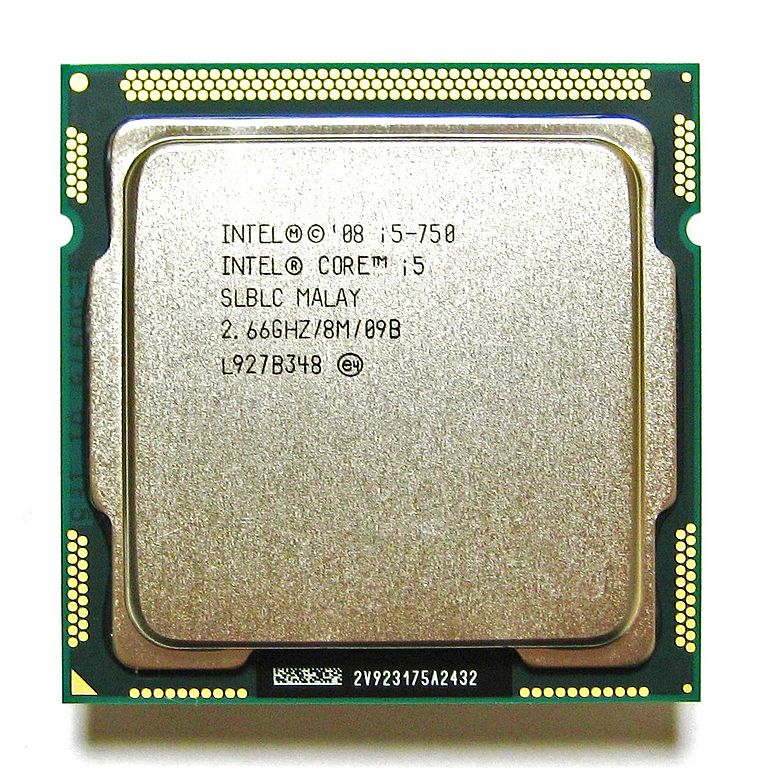
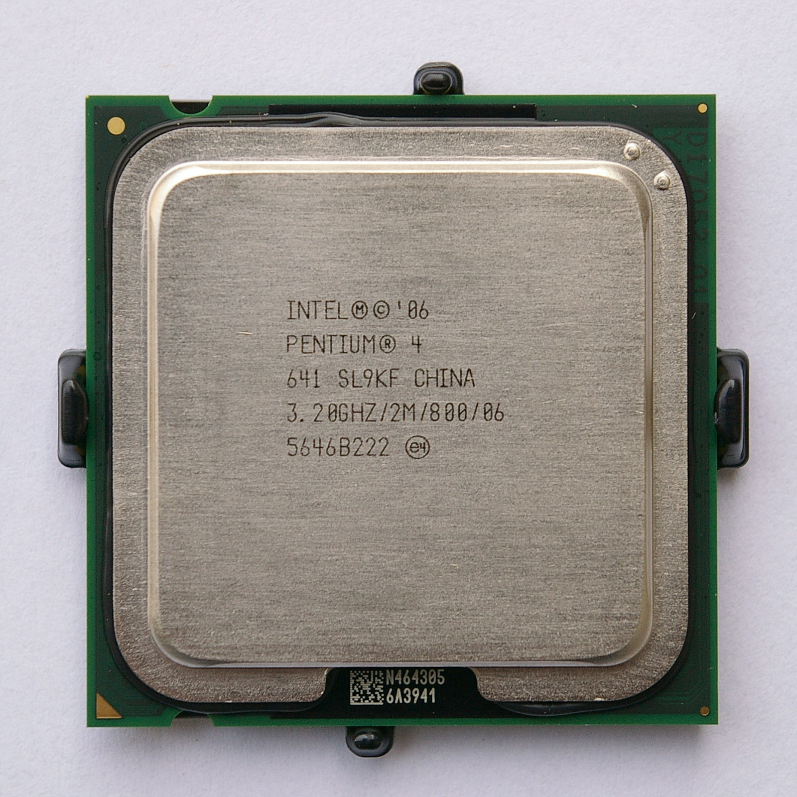
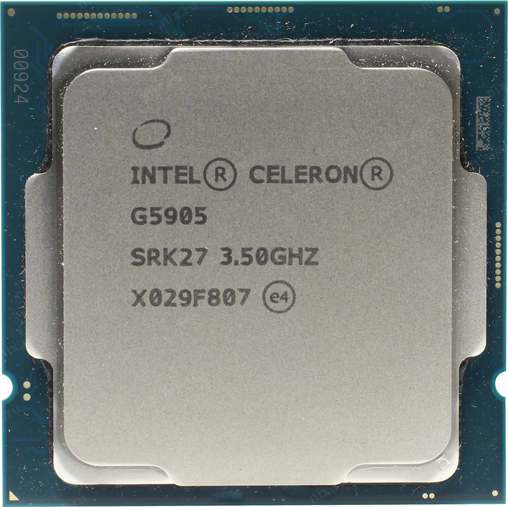

Что означают все эти буквы и цифры в названии процессора? Сейчас разберемся.
Первый элемент в названии процессора это линейка.
Это может быть: Core, Pentium, Xeon, Celeron. Название линейки во многом оперделяет сферу его применения.
Celeron самый бюджетный из линейки и у него низкое энергопотребление, а у Pentium выше тактовая частота и объем памяти.
Core основаня серия процессоров для ПК и ноутбуков.
Xeon предназначен для работы над сервером



Следующий индекс указывает на расположение данной модели в семействе процессоров.
i3 i5 i7 i9 Больше лучше.
Следующие числовое обозначение всегда означает поколение, сейчас самое актуальное 13
После поколения следует ещё 3 цифры как правило они отображают уровень производительности модели относительно других процессоров.
Далее после 3 цифр идет буква, она указывает на отличительною особенность процессора. Например процессоры с индексом "К" можно разгонять, "U" сниженное энергопотребление и другие.
После этого вам всего лишь нужно выбрать для чего вам нужен процессор: для сервера, для максимально простых команд, или для повседневного использования.
Вопрос с Intel закрыт.